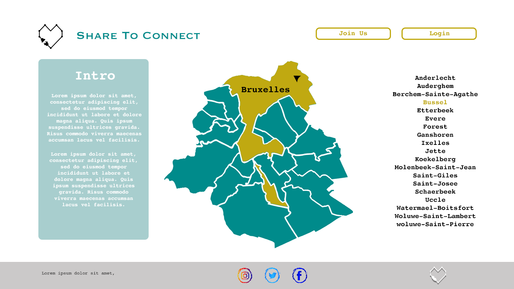

Projet-01-Charlotte-Fatima
Présentation 'Share to Connect'
Pour les Asbl
Plateforme de communication, d'échange et d'organisation.
- Possiblité pour les administrateurs Asbl de mettre en ligne (style googlesheets)les dates,
lieux
et
type de prestation(distribution de colis alimentaire, maraudes...) >
- meilleure visibilité pour une meilleure organisation et répartition des secteur à couvrir.
- Création et mise en ligne d'événements
- Possibilité de créer des events communs.
- Echange et entraide
- Chat, secteur help(demande d'entre aide entre asbl)...
- Annonces pour recruter des bénévoles
Pour les usagés
Site d'informations plus centralisé, référencé par secteur et type de service proposé
- Informations sur les planing des distributions de repas et colis, maraudes... par communes
- Liens utiles(dons, formations, hebergements, travail...)

Exemple carte cliquable ^

Landing page
